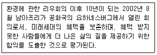
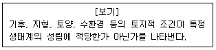
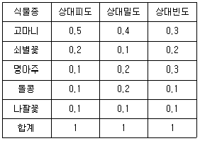
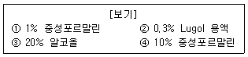
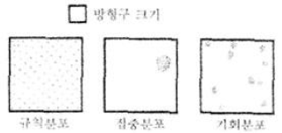

자연생태복원산업기사 (2007-05-13 기출문제)
1과목: 환경생태학개론
1. 수질오염에 관한 설명으로 가장 거리가 먼 것은?
- 수질오염은 침전물질, 공업폐수, 유기물질, 열 등에 의한 오염의 형태로 나눌 수 있다.
- 카드뮴 중독증으로 일본에서 발생한 미나마타병이 있다.
- 미국Tule호 및 Lower Klamath 보호구에서 발생한 생물군집의 DDT 농축은 먹이연쇄단계가 높아질수록 생물학적 농축이 높아짐을 잘 보여주는 사례이다.
- 수중에 존재하는 유기물질을 산화시키는데 필요한 산소 요구량을 생물학적 산소요구량(BOD)이라고 한다.
(정답률: 알수없음)

2. 담수의 부영양화에 주된 원인물질로만 바르게 짝지어진 것은?
- 인(P), 질소(N)
- 인(P), 철(Fe)
- 질소(N), 철(Fe)
- 칼슘(Ca), 마그네슘(Mg)
(정답률: 알수없음)
3. 다음 중 우리나라의 생태계 교란종이 아닌 것은?
- 파랑볼우럭
- 황소개구리
- 붉은귀거북
- 물장군
(정답률: 알수없음)
4. 생태적 지위(ecological niche)를 잘못 설명한 것은?
- 생물이 점유하고 있는 물리적 공간으로서 공간적 니치라고 한다.
- 생물군집 내에 있어서의 기능적인 역할로서 영양 니치를 포함한다.
- 기후, 온도, 토양 기타 생활조건이 되는 여러 가지 환경구배(경사) 중 그 생물이 차지하는 적정범위로서 다차원적 니치라고 한다.
- 생물이 서식하는 장소를 말한다.
(정답률: 알수없음)
5. 열대우림의 개척단계와 극상에 관한 설명 중 옳은 것은?
- 수관은 개척단계에서는 매우 다양하나 극상에서는 동질적이고 밀생한다.
- 우점종의 내음성은 개척단계에서는 강하나 극상에서는 매우 약하다.
- 종자의 크기는 개척단계에서는 작으나 극상에서는 크다.
- 종자의 생명력은 개척단계에서는 짧으나 극상에서는 길다.
(정답률: 알수없음)
6. 다음 중 외부 간섭을 배제했을 경우 자연천이에 의해 나타나는 산림식생을 나타낸 도면은?
- 식생분포도
- 생태자연도
- 현존식생도
- 잠재자연식생도
(정답률: 알수없음)
7. 살충제. 기타 인위적 화학물질 및 방사선 동위원소가 먹이사슬이나 영양단계에 축적되는 현상은?
- 유독성 물질
- DDT 확산
- 생물학적 농축
- 수온오염
(정답률: 알수없음)
8. 내부와 외부로부터 일시적인 교란을 받은 후 원래의 평형상태로 돌아가려 하는 현상을 생태계의 ‘항상성’이라 하는데 이를 유지하는데 중요한 기작은?
- 저항력, 회복력
- 교란력, 회복력
- 기인력, 추진력
- 비교력, 이동력
(정답률: 알수없음)
9. 생태학자 Christern Raunkiaer에 의한 고동식물의 5가지 (Phanerophytes-P, Chamaephytes-Ch, Hemicryptophytes-H, Cryptonphytes-Cr, Therophytes-Th) 생활형 분류방법의 기준은 무엇인가?
- 겨울눈(bud)의 위치
- QN리의 깊이
- 줄기의 굵기
- 꽃피는 시기
(정답률: 알수없음)
10. 개체군의 종간 경쟁에서 경쟁적 배타원리(principle of competitive exclusion)와 같은 법칙은 무엇인가?
- Gause의 법칙
- Shelford의 내성 법칙
- Allee의 법칙
- Liebig의 최소량 법칙
(정답률: 알수없음)
11. 개체군의 연령분포에 관한 설명으로 틀린 것은?
- 개체군 속의 다양한 연령집단의 비율은 현재의 번식상태를 결정할 수 있다.
- 연령구조는 전(前)생식, 생식, 후(後)생식의 세 단계로 구분된다.
- 하루살이, 매미 등의 곤충은 후(後)생식 단계가 극단적으로 길다.
- 연령 피라미드는 쇠퇴형, 발전형, 안전형으로 나뉜다.
(정답률: 알수없음)
12. 생물권의 3영역이 아닌 것은?
- 지권(Lithosphere)
- 미소권(Microsphere)
- 수권(Hydrosphrer)
- 기권(Atmosphere)
(정답률: 알수없음)
13. 다음 생태적 계층구조 중 상대적으로 가장 큰 단위는?
- 개체군
- 생물군집
- 생물군계
- 생물개체
(정답률: 알수없음)
14. 유기금속화합물인 이것이 해양생물, 특히 연체동물에 심각한 피해를 끼치고 있다. 선박이나 어구에 대한 부착생물 방지용 페인트로도 널리 사용되어 온 이것은 낮은 농도에서도 굴의 유생이 패사할 정도의 독성과 기형적인 성장 및 생식불능의 임포섹스(imposex)현상을 유발하기도 한다. 이것은?
- TBT
- E.Coli
- PCBs
- DDT
(정답률: 알수없음)
15. 두 개체군 모두 상호작용으로 이익을 가지는 긍적적(+)인 관계 표현으로 가장 적합한 것은?
- 편해공생
- 기생
- 포식
- 상리공생
(정답률: 알수없음)
16. 환경평가에 있어서 환경 포텐셜의 4가지 개념이 아닌 것은?
- 입지 포텐셜
- 종의 공급 포텐셜
- 종간관계의 포텐셜
- 개체 포텐셜
(정답률: 알수없음)
17. 담수와 해수가 서로 뒤섞이는 지역(transition zone)으로 유입되는 영양물질이 많아 항상 생산성이 높은 환경이 유지되는 지역은?
- 연안대(littoral zone)
- 원양대(oceanic zone)
- 하구역(estuary zone)
- 투광역(euphotic zone)
(정답률: 알수없음)
18. 육상식물의 종자이동에 있어서 부착산포형 식물이 아닌 것은?
- 쇠무릎
- 도둑놈의 갈고리
- 이질풀
- 사상자
(정답률: 알수없음)
19. 다음 중 부영양화를 억제하기 위하여 수계에서 직접 적용하는 방법이 아닌 것은?
- 영양염류 불활성화
- 수초의 경작 및 수확 제거
- 심층수 폭기
- 댐에서 체류시간을 증가
(정답률: 알수없음)
20. 해안지역을 육지화 시키는 간척(reclamation)에 의하여 나타나는 현상이 아닌 것은?
- 홍수조절 및 염해방지
- 도로와 연안 교통망 개설 등 교통개선
- 농경지 또는 산업용지 확보
- 간석지 개발에 의한 해양오염 감소
(정답률: 알수없음)
2과목: 환경학개론
21. 환경친화형 주거단지계획에서 가장 기초가 되는 방법으로 자연이 지니고 있는 본래의 가치 및 체계를 밝혀 인간의 사회적 가치 및 체계와 조화를 이루는 데 필요한 단지계획 접근 방법은?
- 사회적 접근
- 형태·심리적 접근
- 생태적 접근
- 시각·미학적 접근
(정답률: 알수없음)
22. 지속가능한 발전 개념의 바탕에서 생태계의 보전 목적으로 옳지 못한 것은?
- 자연환경보전을 위한 책무와 국제적인 책임을 충족한다.
- 새롭게 변화되고 있는 환경에 맞게 야생생물 개체군을 유지한다.
- 희귀 및 멸종위기 생물종의 개체군이 존속할 수 있도록 유지한다.
- 야생생물의 군집과 자연적 지향의 특징을 유지한다.
(정답률: 알수없음)
23. 환경친화적 도시조성을 위한 도시계획수립에 있어 고려해야 할 도시생태계의 특성이 아닌 것은?
- 생물서식공간의 보전과 창출
- 생육환경의 개선
- 서식공간의 연결
- 개체수의 증대
(정답률: 알수없음)
24. 산림식생대 구분에 많이 이용되는 것으로 온량지수와 한랭지수가 있다. 어떤 도시의 월평균 기온이 5℃ 미만인 달은 4달이었고 해당달의 평균기온은 -3℃, -1℃, 2℃, 4℃ 였다고 할때의 한랭지수는?
- -15
- -18
- -22
- -24
(정답률: 알수없음)
25. 생태·자연도의 평가부문에 해당하지 않은 대상은?
- 식생
- 멸종위기 야생동물
- 자연경관
- 녹피율
(정답률: 알수없음)
26. 우리나라의 핵심 생태지역에 해당되지 않은 곳은?
- 국립공원
- 비무장지대
- 동해안지대
- 백두대간
(정답률: 알수없음)
27. 다음 설명에 해당되는 국제회의는?

- 의제 21회의
- 기후변화협약회의
- 동북아 협력프로그램회의
- 지속가능 발전에 관한 세계정상회의(WSSD)
(정답률: 알수없음)
28. 농촌지역에서 생물의 서식지 질을 높이기 위한 방안으로 옳지 못한 것은?
- 습지와 초지 사이의 관목덤불숲은 다양한 서식처를 제공하므로 보전한다.
- 유기농법을 장려하여 다양한 생물이 서식하도록 한다.
- 습지는 모기의 서식처가 되므로 모두 제거한다.
- 생울타리는 다양한 생물의 서식처를 제공하므로 설치를 권장한다.
(정답률: 알수없음)
29. 다음 ‘생태계’에 관한 설명 중 옳은 것은?
- 생태계 내에서는 에너지의 이동과 물질 순환이 일어나며 이들로 인해 존립한다.
- 생태계는 생물세계만을 뜻한다.
- 생태계 내에서 생물과 비생물과의 관계는 서로 단절되어 있다.
- 생태계는 향상성을 스스로 유지하는 능력이 전혀 없다.
(정답률: 알수없음)
30. 다음 중 2차 대기오염물질(secondary air pollution)에 해당하는 것들로만 짝지어진 것은?
- 탄소화합물. 황산화물
- 오존, 과산화수소
- 입상물질, 탄화수소
- 탄화수소, 질산화합물
(정답률: 알수없음)
31. 도시생태 네트워크 계획과 관련 없는 것은?
- 도시생태 네트워크 계획의 목표 설정
- 도시생태 네트워크 형성(조성) 방침 설정
- 각 계획대상지구의 환경형성(조성)방침 설정
- 최종적인 단계는 과제 정리
(정답률: 알수없음)
32. 다음 중 임야지로 생산력이 낮지만 토양배수는 양호하며 유효토심은 30cm, 바위가 있으며 경사는 50%인 경우 토양적성등급은?
- 임야 2급지
- 임야 3급지
- 과수, 상전 1급지
- 과수, 상전 2급지
(정답률: 알수없음)
33. 해역의 환경기준에서 BOD를 사용하지 않고 COD를 사용하는 이유는?
- 해수의 ph가 8.2로 높기 때문에
- 염분농도가 높아 BOD를 정상적으로 측정할 수가 없기 때문에
- 염분농도가 높아 미생물이 성장할 수가 없기 때문에
- 염분농도가 높아 담수보다 2배 이상의 분석시간이 요구되기 때문에
(정답률: 알수없음)
34. 야생동·식물 보호법상에서 야생동·식물 특별보호구역에 대한 설명 중 틀린 것은?
- 멸종위기종의 보호 및 번식을 위하여 특별히 보전할 필요가 있는 지역에 대하여 지정한다.
- 건축물 그 밖의 공작물의 신축·증축은 허용하지 않는다.
- 하천·호소 등의 구조를 변경하거나 수위 또는 수량에 증감을 가져오는 행위는 허용되지 않는다.
- 토석의 부분적 채취는 가능하다.
(정답률: 알수없음)
35. 다음 조류 가운데 멸종위기야생동·식물 1급이 아닌 것은?
- 노랑부리백로
- 쇠황조롱이
- 저어새
- 검독수리
(정답률: 알수없음)
36. 다음 중 정수성 수생식물이 아닌 것은?
- 부틀
- 마름
- 갈대
- 줄
(정답률: 알수없음)
37. 생물 종과 군집보호를 위한 우선순위 설정의 기준에 적용되지 않는 사항은?
- 회전율(turnover rate)
- 차별성(distinctiveness)
- 위험성(endangerment)
- 유용성(utility)
(정답률: 알수없음)
38. 다음 중 태양으로부터 오는 유해한 자외선(UV)를 흡수해 주는 오존층(ozone layer)은 어느 대기층에 존재하는가?
- 대류권
- 성층권
- 중간권
- 열권
(정답률: 알수없음)
39. 다음 중 도시건설 사업시 제안되는 환경계획 지표와 거리가 먼 것은?
- 우수 유출률
- 건물 용적률
- 자연지반 녹지율
- 건축물 에너지 호율
(정답률: 알수없음)
40. 표지법에서 괭이갈매기 개체군의 개체수를 추정하려고 한다. 다음의 가정 중 타당한 것은?
- 괭이갈매기에 붙인 표지의 일부는 떨어질 수 있다.
- 표지로 인하여 표지된 개체의 사망률이 높다.
- 괭이갈매기의 이입 및 이출이 항상 자유롭다.
- 표지된 괭이갈매기는 전체 집단에 골고루 분산된다.
(정답률: 알수없음)
3과목: 생태복원공학
41. 자연생태복원의 긍적적인 목표로 가장 적합한 것은?
- 인간과 자연의 지속적인 공생·공존
- 아름다운 경관조성
- 생태적 천이의 촉진
- 생물 서식지 복원
(정답률: 알수없음)
42. 훼손지 복원을 위한 식생의 조건 중 틀린 것은?
- 번식력과 생장력이 왕성해야 한다.
- 필요량의 종자와 묘목이 녹화계획에 맞도록 적기에 입수될 수 있어야 한다.
- 습윤지에서 생육하는 능력이 좋아야 한다.
- 다년생으로 동계의 보전효과가 높은 식물이어야 한다.
(정답률: 알수없음)
43. 다음 중 물 환경요인의 설명으로 틀린 것은?
- 물의 시간적, 공간적 분포 밍 변화의 상태를 총칭하여 수문(水文)이라 한다.
- 물을 역학적으로 취급할 때에는 수리(水理)라고 한다.
- 지구상의 물이 대기, 지표 및 지하를 통하여 이동, 순환하는 과정을 수문환(水文環)이라 한다.
- 소비수량은 강수량에서 수관에 의해 차단량을 뺀 값이다.
(정답률: 알수없음)
44. 토양경도는 토양이 나타내는 역학적 저항을 조사하는 방법이다. 일반적으로 토양경도는 야마나타(山中式) 토양 경도계로 눈금을 읽어 측정한다. 토양경도와 식물생육간의 설명으로 틀린 것은?
- 토양경도가 27∼30mm 에서는 흙이 너무 단단해서 식물의 생육이 곤란하다.
- 토양경도가 18mm 이하이면 식물생육은 용이하지만 너무 연해서 비탈이 무너질 위험성이 높다.
- 토양경도가 23∼27mm는 식물생육에 가장 양호한 조건이다.
- 토양경도가 30mm 이상이면 근계의 침입이 곤란하여 녹화가 힘든 상태이므로 식생기반재 뿜어붙이기를 해야 녹화가 가능하다.
(정답률: 알수없음)
45. 다음 중 곤충의 서식을 위한 다공질 공간 제공기법에 해당하지 않은 것은?
- 돌무더기 놓기
- 고목배치
- 통나무 쌓기
- 횃대 놓기
(정답률: 알수없음)
46. 환경녹화공사 시공에 있어 각 항목별로 주의할 사항이 틀린 것은?
- 철재 - 가스, 불활성 가스 아크용접, 아르곤 가스용접 등의 방식을 원칙으로 한다.
- 철재 - 부재의 안정성과 시공성, 교환성 등을 고려하여 볼트 등의 긴결재를 사용하여 접합한다.
- 금속재 - 내부구조용보다 미장용으로 많이 사용한다.
- 금속재 - 부식되지 않은 금속을 사용한다.
(정답률: 알수없음)
47. 앞 표면에 도드라진 줄이 있고 옆쪽이 5∼10mm로 한지형 잔디 중 질감이 가장 거칠고, 주형(bunch type)의 생육 특성을 지닌 잔디는?
- 톨 훼스큐
- 켄터키 블루그래스
- 퍼레니얼 라이그래스
- 크리핑 벤트그레스
(정답률: 알수없음)
48. 종자에서 막 발아한 시기로 한랭 ·건조 등의 환경변화에 가장 약한 시기는?
- 생육기
- 실생기
- 성숙기
- 휴면기
(정답률: 알수없음)
49. 식물생육에 적합한 토양은 용적비 기준으로 무기질 45%, 유기질 5%, 공기 20%, 수분 30% 이다. 도입식물의 원할한 생육을 위해서 우리나라 토양에서 가장 문제가 되는 토양 구성성분과 토양 10m3에 포함해야 할 용적은?
- 유기질, 용적0.5m3
- 공기, 2m3
- 수분, 3m3
- 무기질, 용적 4.5m3
(정답률: 알수없음)
50. 어떤 목본종자를 파종하여 훼손지를 복원하려고 하는데, 이때 목본종자의 조건이 다음과 같은 경우 이 목본종자의 발아율은? (단, 파종량 : 10g/m2, 평균립수 : 50립/g, 순도 : 100%, 보정률 : 0.5이다.)
- 50%
- 60%
- 70%
- 80%
(정답률: 알수없음)
51. 복원시 고려되어야 할 요소 중 가장 거리가 먼 것은?
- 균질성(homeogeneity)
- 구성(composition)
- 기능(function)
- 역동성과 회복력(dynamics and resilience)
(정답률: 알수없음)
52. 다음 토양개량제 중 투수·통기성의 개량 및 배수층의 효과가 가장 높은 것은?
- 흑요암 펄라이트
- 규조토소성립
- 버미클라이트
- 암연
(정답률: 알수없음)
53. 다음 중 자연환경복원학의 발전에 이바지한 분야는?
- 문화인류학
- 수목학
- 수리학
- 보전생물학
(정답률: 알수없음)
54. 인공훼손지라고 할 수 없는 지역은?
- 도로
- 광산
- 해안침식
- 산업시설
(정답률: 알수없음)
55. 도로비탈면 토양의 염기치환용량 설계표면(개량목표치)은?
- 3me/100g이상
- 6me/100g이상
- 9me/100g이상
- 12me/100g이상
(정답률: 알수없음)
56. 미국 농무부법의 토양압경 기준에서 중간모래(중사)의 규격은?
- 0.5∼1.0mm
- 0.25∼0.5mm
- 0.1∼0.25mm
- 0.002∼0.⑤mm
(정답률: 알수없음)
57. 다음 보기의 환경 포텐셜은 어떤 유형을 설명한 것인가?

- 종의 공급 포텐셜
- 입지 포텐셜
- 종간관계 포텐셜
- 천이 포텐셜
(정답률: 알수없음)
58. 다음 중 인공골재에 해당하지 않은 것은?
- 산화자갈
- 팽창혈암
- 펄라이트
- 슬래그
(정답률: 알수없음)
59. 화학적 토양침식 방지재 중에서 종비토 위에 살포하여 피막 형성 또는 고결에 의해서 침식 방지를 도모하는 것은?
- 시트류
- 점착제
- 망상류
- 양생재
(정답률: 알수없음)
60. 천이단계와 목본식물 종의 생활사 및 생리적 특성에 대한 일반적인 경향에 대한 설명 중 틀린 것은?
- 성장속도 : 천이 초기종 - 빠름, 천이 후기종 - 늦음
- 종자크기 : 천이 초기종 - 작음, 천이 후기종 - 큼
- 종자 휴면성 : 천이 초기종 - 있음, 천이 후기종 - 없음
- 내음성 : 천이 초기종 - 있음, 후기종 - 없음
(정답률: 알수없음)
4과목: 생태조사방법론
61. 토양의 미생물 수를 측정하는 방법 중 생균수측정법으로 가장 적합한 것은?
- 희석평판법
- 슬라이드 매몰법
- 형광항체법
- 토양절편법
(정답률: 알수없음)
62. 다음 탁도의 단위 중 네펠로법에서 주로 사용하는 단위는?
- JTU
- NTU
- ppm
- 도
(정답률: 알수없음)
63. 식물군집은 우점종은 이름에 따라 붙여진다. 상대우점값으로 우점종을 결정할 때 표에 제시된 군집에서 우점종으로 옳은 것은?

- 고마니
- 쇠별꽃
- 명아주
- 돌콩
(정답률: 알수없음)
64. 식물군집조사에서 어떤 종이 덮는 지표면의 면적을 전체 생육지 면적으로 나눈 값을 계급화하여 평가할 때 사용하는 것은?
- Bran-Blanquet법
- Km value
- Shanon index
- Diversity index
(정답률: 알수없음)
65. 휴대용 전파수신기(portable receiver)를 이용한 무선추적(radio-tracking)을 통해 연중(1년 동안) 생태와 서식지 이용 특성을 파악하기 어려운 종은?
- 돌쟁
- 노루
- 두루미
- 족제비
(정답률: 알수없음)
66. 다음 보기의 고정용액들 중 식물성 플랑크톤 고정에 적당한 것만 고른 것은?

- ①과 ②
- ①과 ③
- ②와 ③
- ②와 ④
(정답률: 알수없음)
67. 그림은 개체군의 3가지(기화분포, 집중분포, 규칙분포) 공간분포를 나타낸 것이다. 이 중 집중분포를 유발할 수 있는 요인이 아닌 것은?

- 한정된 먹이 지원
- 밀접한 사회적인 연계성
- 낮은 한 개체의 방어능력
- 대환경은 동일하지만 현저한 미소환경의 차이
(정답률: 알수없음)
68. 밀도가 높은 소형 식물성 플랑크톤의 계수를 위한 기구가 아닌 것은?
- Hemacytometer
- P-M 플랑크톤 계실
- 현미경
- Homogenizer
(정답률: 알수없음)
69. 표본추출방법의 설명 중 틀린 것은?
- 랜덤표본추출은 먼저 추출하려는 생태적 실체의 범위를 확정한 다음 표본수출의 방법을 선정하고 마지막으로 표본추출에 착수한다.
- 반복표본 추출은 측정값의 불명확성을 반복측정을 통해 극복하려는 방법이다.
- 종-표본곡선과 성취도 곡선으로 반복표본수가 적절한지를 살핀다.
- 하위표본추출은 표본추출과 다른 방법으로 선별하는 것이 좋다.
(정답률: 알수없음)
70. 용존산소량(DO)측정을 위한 종균접종의 주의사항으로 틀린 것은?
- 종균의 접종은 토양 현탁수 및 활성오니를 이용할 수 있다.
- 종균은 생활하수를 1시간 이상, 36시간 이내에 실온에서 침전시킨 후 침전물을 이용한다.
- 유기농법에 이용하기 위하여 상품화된 종균을 이용할 수도 있다.
- 최대첨가량은 물 표본의 DO가 50%만큼 감소되도록 종균접종물질의 농도를 희석한다.
(정답률: 알수없음)
71. 삼림쇠퇴의 평가방법 설명이 틀린 것은?
- 옆의 탈락률이 0∼10% 정도이고, 잎의 변색률이 25% 이하면 건강한 삼림이다.
- 삼림쇠퇴는 침엽수림보다 광엽수림에서 심하게 나타난다.
- 잎의 황화는 어린나무보다 늙은 나무에서 더 심하다.
- 일반적으로 침엽의 나무가 넓은 면적에 걸쳐 한꺼번에 고사한다.
(정답률: 알수없음)
72. 흡인병을 이용하여 채집하는 동물로 가장 적합한 것은?
- 은폐동물
- 저서동물
- 포복동물
- 토양 소형 무척추동물
(정답률: 알수없음)
73. 수중에서 식물의 생산량을 측정하는 방법으로 알맞은 것은?
- 수확법
- 상대생장법
- 생육분석법
- 명병-암병법
(정답률: 알수없음)
74. 윈클러(Winkler)법으로 용존산소를 측정할 때 다음 중에서 가장 마지막에 사용되는 시약은?
- 황산망간(MnSO4)
- 진한 황산(H2SO4)
- 티오황산나트륨(Na2S2O3) 용액
- 알라리성 용액 요오드-아지드 시약
(정답률: 알수없음)
75. 질산염의 농도가 1,000ppm 이상인 경우 희석하지 않고 이를 적절히 측정할 수 있는 방법은?
- 카드뮴 환원법
- 염화티타늄법
- 하이드리진 환원법
- 이온전극법
(정답률: 알수없음)
76. 생물량 조사시 탈회분량을 측정할 때 시료를 태우는 온도로 가장 적합한 것은?
- 약 300℃
- 약 400℃
- 약 500℃
- 약 600℃
(정답률: 알수없음)
77. 다음 중 생태계의 제한요인에 대한 설명으로 틀린 것은?
- 동·식물의 분포와 풍부도를 규제하거나 제한하는 생태적 조건을 말한다.
- Liebig의 최소량의 법칙에서 그 개념이 처음 도입되었다.
- Shelford는 환경요소가 부족한 것 뿐 아니라 과도한 것도 개체군의 크기를 제한한다고 하였다.
- 지표생물 또는 지표종은 내성의 범위로 넓은 종이 좋다.
(정답률: 알수없음)
78. 육상생태계의 생태조사시 우선 조사항목에 해당되지 않은 것은?
- 식물상 및 식생의 조사 분석
- 수생식물의 조사 분석
- 조류(새)의 조사 분석
- 양서류의 조사 분석
(정답률: 알수없음)
79. 둥지 방형구(nested quadrat)와 종-면적곡선에 대한 설명으로 옳지 않은 것은?
- 최소면적의 방형구를 찾아낼 때 이용한다.
- 종-면족곡선에서 X축(면적)은 다연대수(1n)로 나타낸다.
- 방형구의 면적을 2배씩 증가시키면서 종의 수를 조사한다.
- 수평곡선이 나타나는 시기의 방형구 수는 구성종의 수와 비례한다.
(정답률: 알수없음)
80. 산림의 쇠퇴는 잎의 탈락률과 변색률을 조사하여 판정한다. 잎의 탈락률이 11∼25%이며, 잎의 변색률이 25% 이하인 것과 탈락률이 0∼10%이고, 잎의 변색률이 25∼60%로 조사된 삼림의 쇠퇴등급은?
- 1등급
- 2등급
- 3등급
- 4등급
(정답률: 알수없음)